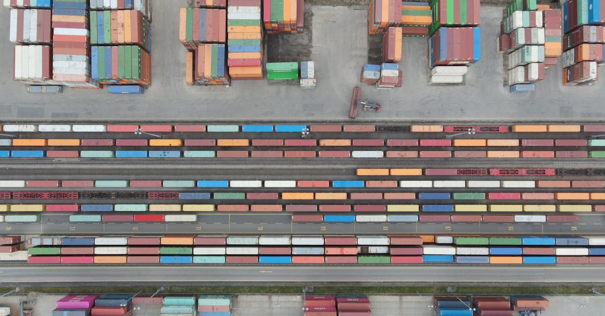

Introduction : La Résilience Inattendue du Secteur de l'IA Face aux Turbulences
Dans un contexte mondial souvent marqué par l'incertitude géopolitique et les fluctuations économiques, certains secteurs démontrent une résilience remarquable, voire une capacité à prospérer contre toute attente. L'annonce récente de Taiwan Semiconductor Manufacturing Co. (TSMC), le géant mondial de la fabrication de puces, en est une illustration frappante. Le rapport de Bloomberg, soulignant une augmentation spectaculaire de 58% de ses bénéfices, n'est pas seulement une nouvelle financière de premier plan ; il s'agit d'un indicateur puissant de la force inébranlable de l'investissement dans l'intelligence artificielle (IA), même face à des événements perturbateurs comme le conflit au Moyen-Orient dans ses premières semaines. Cette performance exceptionnelle de TSMC, pivot de l'écosystème technologique mondial, révèle une dynamique profonde : la demande pour des capacités de calcul toujours plus grandes, moteur de l'IA, transcende les craintes immédiates et les tensions régionales.
L'analyse de cette situation dépasse la simple observation des chiffres d'affaires d'une entreprise. Elle nous invite à sonder les fondements d'une économie numérique de plus en plus dépendante de l'IA. La capacité de TSMC à non seulement maintenir, mais à accélérer sa croissance dans un environnement volatil, témoigne de l'urgence et de l'importance stratégique que les nations et les entreprises accordent au développement de l'intelligence artificielle. Les investissements massifs qui alimentent cette croissance ne sont pas conjoncturels ; ils sont structurels, reflétant une transformation fondamentale de notre société et de nos économies. Alors que les marchés financiers, y compris celui des cryptomonnaies, sont intrinsèquement sensibles aux nouvelles géopolitiques, la résilience de l'investissement en IA envoie un signal fort : la course à l'innovation technologique est une priorité absolue, capable de tempérer les vents contraires.
Pour les acteurs du marché, et particulièrement ceux qui s'intéressent aux stratégies de trading basées sur l'IA, cette nouvelle est d'une importance capitale. Elle souligne que l'infrastructure sous-jacente à l'intelligence artificielle – ces puces ultra-performantes sans lesquelles aucun algorithme complexe ne peut fonctionner – est non seulement robuste, mais en pleine expansion. La demande inébranlable pour la puissance de calcul IA, illustrée par la santé financière de TSMC, constitue une base solide pour l'évolution continue des plateformes de trading algorithmique avancées. C'est un rappel que, malgré les turbulences de surface, les forces profondes de l'innovation technologique continuent de modeler le paysage financier, ouvrant de nouvelles opportunités pour ceux qui savent les anticiper et les exploiter. Cet article se propose d'explorer les multiples facettes de cette croissance, ses implications pour l'écosystème technologique global et, plus spécifiquement, sa pertinence pour le monde du trading de cryptomonnaies assisté par IA.

TSMC, le Cœur Battant de l'Innovation en Intelligence Artificielle et Semi-conducteurs
Pour comprendre la portée de la performance de TSMC, il est essentiel de saisir son rôle quasi irremplaçable dans l'écosystème technologique mondial. Taiwan Semiconductor Manufacturing Co. n'est pas un simple fabricant de puces ; c'est le plus grand fondeur de semi-conducteurs au monde, opérant sur un modèle d'affaires unique où il fabrique des puces conçues par d'autres entreprises. Ses clients incluent des géants de l'innovation comme Apple, Nvidia, Qualcomm et AMD, des entreprises qui sont à la pointe du développement de l'IA, de la téléphonie mobile, des centres de données et de l'informatique haute performance. Sans les capacités de fabrication ultra-avancées de TSMC, une grande partie des innovations technologiques que nous tenons pour acquises aujourd'hui, et celles qui émergeront demain, ne verraient tout simplement pas le jour.
La position critique de TSMC est ancrée dans sa maîtrise des technologies de gravure les plus fines, notamment les nœuds de 5 nanomètres (nm) et, plus récemment, de 3 nm. Ces technologies de pointe sont absolument vitales pour la production des puces les plus sophistiquées, celles qui alimentent les processeurs graphiques (GPU) et les accélérateurs d'IA. Les algorithmes d'intelligence artificielle, en particulier ceux liés à l'apprentissage profond et aux grands modèles de langage (LLM), exigent une puissance de calcul colossale, une faible latence et une efficacité énergétique maximale. Seules les puces fabriquées avec les procédés les plus avancés peuvent répondre à ces exigences. TSMC investit des dizaines de milliards de dollars chaque année en recherche et développement (R&D) et en dépenses d'investissement (CAPEX) pour maintenir son avance technologique, créant une barrière à l'entrée quasi insurmontable pour ses concurrents.
Cette position dominante fait de TSMC un baromètre de la santé et de la direction de l'industrie technologique. Lorsque TSMC annonce des bénéfices en forte hausse, c'est un signal clair que la demande pour les technologies qu'il fabrique est robuste. Dans le cas présent, l'augmentation de 58% des bénéfices est directement attribuable à la demande insatiable pour les puces d'IA.
« La performance de TSMC reflète non seulement son excellence opérationnelle, mais aussi l'impératif stratégique global d'investir massivement dans l'intelligence artificielle, un domaine où la puissance de calcul est la nouvelle monnaie. »Cette dynamique est d'autant plus pertinente pour le domaine du trading. Les performances des modèles d'IA, cruciaux pour les agents de trading de cryptomonnaies sophistiqués, dépendent directement de ces puces de pointe. Une meilleure performance des puces signifie des algorithmes plus rapides, plus complexes et capables de traiter des volumes de données plus importants en temps réel, offrant un avantage concurrentiel décisif. La capacité à analyser des millions de points de données en quelques millisecondes, à identifier des motifs complexes et à exécuter des transactions avec une précision chirurgicale repose fondamentalement sur l'infrastructure matérielle que TSMC fournit. C'est le fondement invisible mais essentiel de toute stratégie de trading algorithmique performante.
L'Impulsion de la Demande en IA : Un Phénomène Profond et Irréversible
La croissance exponentielle de TSMC n'est pas le fruit du hasard, mais la conséquence directe d'un phénomène technologique d'une ampleur sans précédent : l'explosion de la demande en intelligence artificielle. Cette impulsion est alimentée par plusieurs facteurs convergents qui transforment radicalement nos industries et nos modes de vie. Au cœur de cette révolution se trouvent les avancées spectaculaires dans les modèles d'IA générative, les grands modèles de langage (LLM) comme GPT-4, et la prolifération des applications d'IA dans tous les secteurs imaginables, de la santé à la finance, en passant par la logistique et l'automobile.
Les centres de données, véritables usines numériques de notre ère, sont en première ligne de cette demande. Ils nécessitent des milliers, voire des millions, de GPU et d'autres accélérateurs d'IA pour entraîner et déployer ces modèles complexes. Chaque nouvelle génération de modèle d'IA exige davantage de puissance de calcul, créant un cycle vertueux – ou vicieux, selon le point de vue – où la demande ne cesse de croître. Les géants de la technologie comme Google, Microsoft, Amazon et Meta rivalisent d'ingéniosité et d'investissements pour construire et étendre leurs infrastructures d'IA, sachant que leur leadership futur dépendra de leur capacité à innover dans ce domaine. Cette « course à l'IA » se traduit directement par des commandes massives auprès de fondeurs comme TSMC, garantissant une feuille de route de production chargée pour les années à venir.
Au-delà des centres de données, l'IA s'intègre progressivement dans les appareils du quotidien (edge AI), des smartphones aux véhicules autonomes, en passant par les systèmes de sécurité et les dispositifs médicaux connectés. Chaque nouvelle application, chaque nouvelle fonctionnalité intelligente, requiert des puces plus performantes et plus économes en énergie. C'est cette ubiquité croissante de l'IA qui assure une demande fondamentale et structurelle, bien au-delà des cycles économiques habituels.
« L'IA n'est plus une simple technologie émergente ; elle est devenue une infrastructure essentielle, comparable à l'électricité ou à internet, dont la nécessité ne fait que croître. »Cette réalité a des implications profondes pour le monde financier. La capacité des marchés, y compris celui des cryptomonnaies, à être analysés et tradés par des agents d'IA dépend intrinsèquement de cette infrastructure matérielle en constante évolution. Des algorithmes de trading plus sophistiqués, capables de détecter des corrélations subtiles, d'anticiper des mouvements de marché basés sur l'analyse de sentiments ou de réagir à des événements macroéconomiques en temps réel, ne peuvent exister sans la puissance de calcul fournie par les puces de dernière génération. Cette demande incessante pour l'IA est donc un catalyseur fondamental, transformant non seulement l'industrie technologique, mais aussi les mécanismes mêmes du trading financier, le rendant plus rapide, plus complexe et potentiellement plus efficace pour ceux qui maîtrisent les outils appropriés.

Géopolitique et Chaînes d'Approvisionnement : Une Vulnérabilité Gérée avec Stratégie
Le succès fulgurant de TSMC se déroule dans un contexte géopolitique d'une complexité sans précédent, où la localisation stratégique de Taïwan et les tensions internationales autour des semi-conducteurs sont des préoccupations majeures. L'île de Taïwan, où TSMC est basée, est au cœur des rivalités entre les États-Unis et la Chine, et sa stabilité est cruciale pour l'approvisionnement mondial en puces avancées. Les craintes d'un conflit potentiel dans le détroit de Taïwan ont souvent pesé sur les marchés, créant une volatilité et une incertitude quant à l'avenir de la chaîne d'approvisionnement technologique. Pourtant, la performance de TSMC, avec un bond de 58% de ses bénéfices, même après les premières semaines du conflit au Moyen-Orient, suggère que la résilience du secteur est plus forte que les craintes initiales des marchés.
TSMC et les gouvernements des principales puissances mondiales ont bien compris les risques associés à une concentration géographique aussi critique. C'est pourquoi une stratégie de diversification des chaînes d'approvisionnement est en cours. TSMC a initié des projets massifs de construction de nouvelles usines (fabs) aux États-Unis (Arizona) et au Japon, avec des discussions avancées pour une expansion en Europe. Ces initiatives visent à réduire la dépendance à l'égard d'une seule région et à assurer une certaine « souveraineté des puces » pour les grandes économies. Si ces projets sont coûteux et complexes, ils témoignent d'une volonté politique et industrielle de sécuriser l'accès aux technologies de semi-conducteurs, considérées comme une ressource stratégique nationale au même titre que l'énergie ou la défense.
« La capacité de TSMC à absorber les chocs géopolitiques et à poursuivre sa croissance est un témoignage de la demande fondamentale pour l'IA, transcendant les préoccupations de court terme. »Le fait que l'investissement en IA n'ait pas été déprimé par le conflit au Moyen-Orient est un indicateur clé. Cela suggère que les acteurs majeurs considèrent la course à l'IA comme une priorité stratégique qui ne peut être mise en pause, même face à des turbulences régionales. Les gouvernements et les entreprises sont prêts à engager des ressources considérables pour garantir l'accès aux capacités de calcul nécessaires à l'IA, percevant un risque plus grand dans le retard technologique que dans les fluctuations géopolitiques à court terme.
Pour les investisseurs et les traders, notamment dans le domaine des cryptomonnaies, comprendre cette résilience des chaînes d'approvisionnement est crucial. La stabilité de l'infrastructure technologique mondiale est un pilier pour le développement et la fiabilité des plateformes de trading algorithmique. Si les marchés crypto sont connus pour leur volatilité, la solidité des fondations technologiques qui permettent le fonctionnement des agents IA de trading est un facteur de confiance. Une chaîne d'approvisionnement résiliente en puces signifie une innovation continue et une disponibilité des ressources nécessaires pour faire fonctionner et améliorer les algorithmes de trading les plus avancés, 24h/24, sans interruption majeure due à des pénuries de composants critiques. Cette gestion stratégique de la vulnérabilité est donc un signal positif pour la pérennité de l'écosystème technologique global et ses ramifications financières.
Les Indicateurs Financiers : Une Croissance Solide et Pérenne Ancrée dans l'IA
L'analyse des indicateurs financiers de TSMC va bien au-delà du chiffre impressionnant de 58% d'augmentation des bénéfices. Elle révèle une entreprise non seulement profitable, mais aussi stratégiquement positionnée pour une croissance pérenne, largement tirée par le secteur de l'intelligence artificielle. Ce bond des bénéfices est d'autant plus significatif qu'il intervient dans un climat économique mondial incertain, soulignant la force intrinsèque de la demande pour ses produits de pointe. Les revenus ont également affiché une croissance robuste, dépassant les attentes des analystes, ce qui indique une exécution opérationnelle solide et une gestion efficace des coûts.
Au-delà du résultat net, il est crucial d'examiner la structure de la rentabilité de TSMC. Les marges brutes et les marges d'exploitation sont restées à des niveaux élevés, voire ont progressé, ce qui est remarquable étant donné les investissements colossaux que l'entreprise doit réaliser en R&D et en CAPEX (dépenses d'investissement) pour rester à la pointe de la technologie. Ces investissements, qui se chiffrent en dizaines de milliards de dollars chaque année, sont essentiels pour développer les nouvelles générations de puces (comme les nœuds 2 nm et au-delà) et pour étendre sa capacité de production. Le fait que TSMC puisse générer une telle croissance de bénéfices tout en investissant massivement est un témoignage de son leadership technologique et de la forte demande de ses clients pour les puces les plus avancées, notamment celles dédiées à l'IA.
La ventilation des revenus de TSMC par technologie et par application confirme l'importance croissante de l'IA. Si les smartphones et l'informatique haute performance (HPC) ont toujours été des piliers, la part des revenus provenant des puces d'IA, souvent intégrées dans les serveurs HPC, est en augmentation constante. Cette diversification des sources de revenus, avec une dépendance croissante envers un secteur en pleine expansion comme l'IA, renforce la résilience financière de l'entreprise. Les analystes prévoient que cette tendance se poursuivra, avec des perspectives de croissance à deux chiffres pour les années à venir, portées par l'adoption généralisée de l'IA dans toutes les industries.
« La robustesse financière de TSMC est un baromètre de la vitalité de l'écosystème IA global, un signal fort pour les investisseurs et les innovateurs. »Cette santé financière robuste de TSMC n'est pas seulement une bonne nouvelle pour ses actionnaires ; elle a des implications plus larges pour l'ensemble de l'écosystème technologique. Une entreprise aussi centrale et financièrement solide est capable de soutenir l'innovation chez ses clients, d'investir dans des recherches à long terme et de garantir la stabilité de la chaîne d'approvisionnement mondiale. Pour les acteurs du trading, en particulier ceux qui s'appuient sur des agents d'IA pour naviguer sur le marché des cryptomonnaies, la performance financière de TSMC est un indicateur de la solidité des fondations technologiques. Un écosystème technologique florissant, alimenté par des entreprises comme TSMC, garantit que les outils et les infrastructures nécessaires aux stratégies de trading les plus avancées, capables d'opérer 24h/24, continueront d'être développés et améliorés, offrant ainsi un cadre fiable pour l'innovation financière.

Implications pour l'Écosystème Technologique et le Trading Algorithmique
La performance exceptionnelle de TSMC, stimulée par l'investissement massif en IA, n'est pas un événement isolé ; elle est le reflet d'une transformation profonde qui redéfinit l'ensemble de l'écosystème technologique. Cette dynamique a des implications considérables, non seulement pour les géants de la tech, mais aussi pour des secteurs plus spécifiques comme le trading algorithmique, en particulier celui des cryptomonnaies. L'IA est en train de créer un cercle vertueux : une demande accrue pour l'IA stimule les profits des fabricants de puces comme TSMC, qui peuvent alors réinvestir massivement dans la R&D pour créer des puces encore plus puissantes, ce qui, à son tour, permet le développement d'IA encore plus sophistiquées, et ainsi de suite.
Cette spirale positive de l'innovation se traduit par une accélération sans précédent de la puissance de calcul disponible. Des puces plus rapides et plus efficaces permettent aux développeurs d'IA de concevoir des modèles plus grands, plus complexes et plus précis. Pour l'industrie financière, cela signifie une capacité accrue à traiter des quantités massives de données en temps réel, à identifier des patterns subtils dans les mouvements de marché, à analyser le sentiment des nouvelles et des réseaux sociaux, et à exécuter des stratégies de trading avec une latence minimale. Ces avancées sont particulièrement pertinentes pour le marché des cryptomonnaies, connu pour sa volatilité et sa nature décentralisée, où la vitesse et la précision sont des atouts majeurs.
Les agents d'IA qui tradent les cryptos pour vous, 24h/24, bénéficient directement de cette évolution technologique. Des puces plus puissantes signifient des algorithmes capables de :
- Analyser plus de données simultanément : Intégrer des flux d'informations provenant de multiples sources (prix, volume, actualités, données on-chain) pour une vision plus holistique du marché.
- Exécuter des stratégies plus complexes : Déployer des modèles d'apprentissage profond pour prédire les mouvements de prix avec une plus grande précision, ou pour identifier des opportunités d'arbitrage quasi instantanément.
- Réagir plus rapidement aux événements : Traiter les informations et prendre des décisions en millisecondes, un avantage crucial dans un marché où chaque instant compte.
- Optimiser la gestion des risques : Utiliser l'IA pour surveiller et ajuster dynamiquement les positions en fonction des conditions de marché changeantes, minimisant les pertes potentielles.
« La puissance de calcul fournie par des entreprises comme TSMC est le carburant des agents d'IA qui redéfinissent les frontières du trading crypto, offrant des capacités d'analyse et d'exécution inégalées. »L'intégration de l'IA dans le trading n'est plus une option, mais une nécessité pour rester compétitif. Les avancées de TSMC ne sont pas seulement un baromètre de la demande en IA ; elles sont un catalyseur direct pour l'amélioration continue des outils qui permettent aux investisseurs d'exploiter les opportunités dans un marché des cryptomonnaies de plus en plus sophistiqué. La capacité d'un agent IA à opérer 24h/24, sans émotion et avec une puissance de calcul croissante, est directement liée à la performance et à l'innovation des semi-conducteurs. Cette interconnexion souligne l'importance de surveiller les développements technologiques fondamentaux pour quiconque cherche à maximiser son potentiel dans le trading assisté par IA.
Conclusion : L'Ère de l'IA Inébranlable et ses Opportunités pour le Trading Crypto
L'extraordinaire performance financière de TSMC, avec un bond de 58% de ses bénéfices malgré les incertitudes géopolitiques, est bien plus qu'une simple statistique d'entreprise. C'est un témoignage éclatant de la force inébranlable de l'investissement mondial dans l'intelligence artificielle. Cette résilience démontre que la course à l'IA est une priorité stratégique et économique qui transcende les préoccupations de court terme, positionnant l'IA comme le moteur fondamental de la prochaine décennie d'innovation et de croissance.
Nous avons vu comment TSMC, en tant que cœur battant de l'innovation en semi-conducteurs, est indispensable à la création des puces les plus avancées, celles-là mêmes qui alimentent les géants de l'IA et les centres de données du monde entier. La demande pour des capacités de calcul toujours plus grandes, des LLM aux applications d'IA générative, est un phénomène profond et irréversible qui garantit une croissance soutenue pour les fournisseurs d'infrastructure technologique. Même les risques géopolitiques et les tensions sur les chaînes d'approvisionnement sont gérés de manière stratégique, avec des investissements massifs dans la diversification pour assurer la pérennité de l'accès aux technologies critiques.
Les indicateurs financiers de TSMC ne font que confirmer cette tendance : une croissance solide, des marges robustes et des investissements colossaux en R&D et CAPEX qui préparent le terrain pour les innovations futures. Cette santé financière et cette vision stratégique sont des signaux positifs pour l'ensemble de l'écosystème technologique, garantissant que les outils nécessaires à l'avancement de l'IA continueront d'être développés et améliorés à un rythme effréné.
Pour les investisseurs et les traders, et en particulier ceux qui s'intéressent au marché dynamique des cryptomonnaies, les implications sont claires. L'infrastructure sous-jacente qui permet le fonctionnement d'agents d'IA de trading sophistiqués est non seulement robuste, mais en pleine expansion. Des puces plus puissantes signifient des algorithmes plus rapides, plus précis et capables de gérer une complexité accrue, offrant un avantage concurrentiel significatif dans un marché qui ne dort jamais.
« L'ère de l'IA est inébranlable, et les opportunités qu'elle crée pour le trading automatisé de cryptomonnaies sont immenses, pour ceux qui savent exploiter la puissance des agents d'IA. »Cette tendance renforce la valeur des solutions pilotées par l'IA dans des marchés aussi complexes et volatils que celui des cryptomonnaies. L'accès à des agents IA capables d'analyser des données 24h/24, de réagir instantanément aux mouvements de marché et d'exécuter des stratégies avec une efficacité inégalée devient un atout indispensable. En comprenant les forces profondes qui animent l'industrie des semi-conducteurs et l'IA, les investisseurs peuvent mieux positionner leurs stratégies et tirer parti de cette révolution technologique pour naviguer et prospérer dans le futur du trading financier.